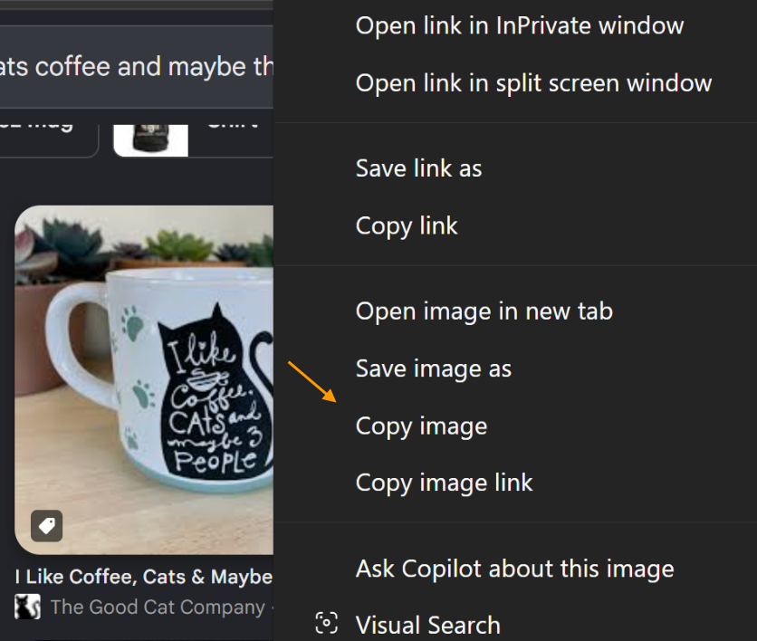
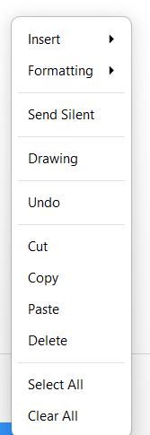
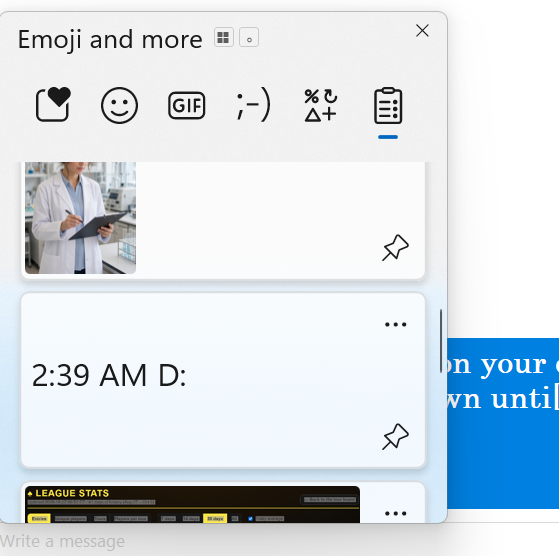
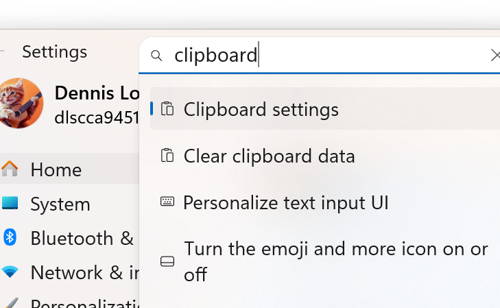
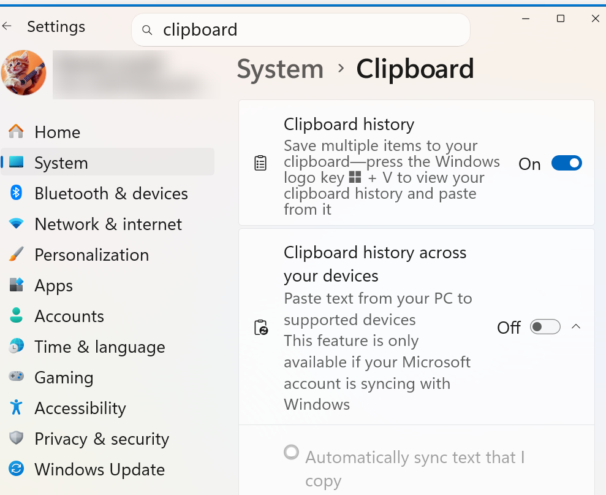
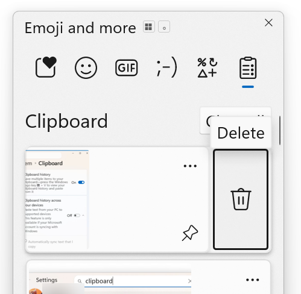
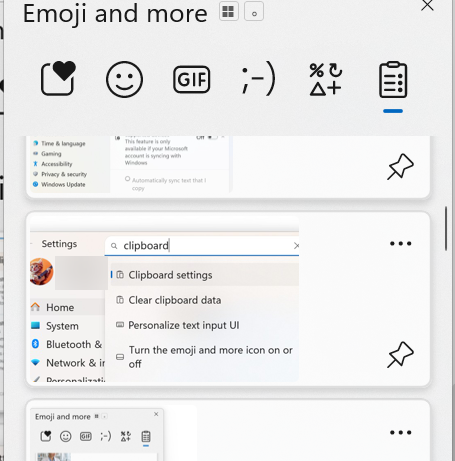
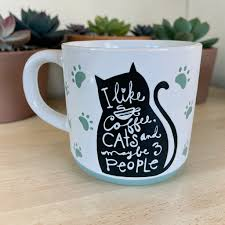

The text you copied will stay on your clipboard until you remove it, or Windows removes it when you copy something new and it has become the oldest item on your clipboard.
To copy an image, hover over it with your mouse cursor and press your right mouse button. A menu will appear. If your clipboard has access to the image, one of the options will be 'copy'.

To paste an item from your clipboard, if it is the last item you copied, position your cursor where you want it to go and press your right mouse button-- from the menu, select 'paste'.

If it is not the last item, position your cursor where you want it, then hold down the Windows key and press the letter 'V' (for "view"). Scroll down until you find the item you want and click on it with your mouse-- left mouse key.

note: this doesn't work unless you have clipboard history turned on in Windows settings.


note: to remove an item from your clipboard, mouseclick the three dots, upper right, then select the trash can icon.

note: to prevent an item from being removed, select the push pin icon, lower right.

practice--- <--- copy this text and paste it here in your text field
repeat 10 times
practice--- copy this image and paste it here

repeat 5 times